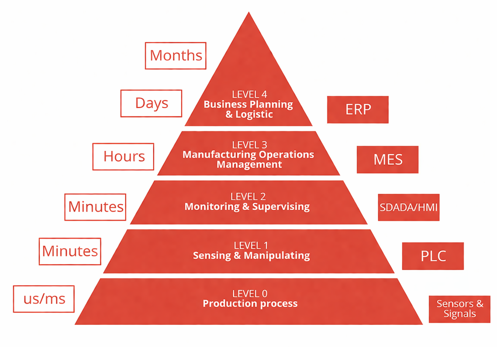

El presente módulo aborda el análisis de una arquitectura de automatización industrial estructurada bajo el estándar ISA-95, mediante la evaluación de la línea de producción a partir de la pirámide de automatización, con el pro pósito de determinar qué capas se encuentran cubiertas y qué elementos componen cada una de ellas. Posteriormente, se establecen las etapas del proceso de producción, construyendo un esquema conceptual que servirá como base para el planteamiento de los diagramas a desarrollar en el Módulo 2. El módulo concluye con la presentación de los datos iniciales recopilados durante la visita técnica realizada a la planta de FEMSA Coca-Cola, los cuales constituyen el punto de partida para el análisis y desarrollo de los módulos subsiguientes y la propuesta de automatizacion final.

Durante la visita técnica a la planta de FEMSA Coca-Cola, se pudo determinar que en toda la linea de produccion estan cubiertos los niveles 0, 1 y 2; con esta información se espera que alcance del proyecto por minimo pueda cubrir hasta la de gestion de operacioenes de manufactura (MES). A continuación se describen los elementos identificados en cada nivel de la pirámide.
| Nivel | Elementos |
|---|---|
| Nivel 0 | Sensores detectores,Bombas hidraulicas,Motores electricos,variadores de velocidad |
| Nivel 1 | Controladores lógicos, sistemas de control discretos y regulatorio |
| Nivel 2 | Sistemas de supervisión sobre líneas |
Se presenta un diagrama de flujo superfical sobre el proceso de embotellamiento de bebidas el cual muestra el orden de las etapas identificadas en la visita tecnica y complementada con investigacion por parte del equipo.
flowchart TD
A[Inicio] --> B[Tratar Agua]
B --> C[Limpiar Botellas Recuperadas]
C --> D[Embotellar Producto]
D --> E[Empacar Producto]
E --> F[Embalar para Distribución]
F --> G[Fin]
style A fill:#222,stroke:#e74c3c,stroke-width:2px,color:#fff
style B fill:#222,stroke:#e74c3c,stroke-width:2px,color:#fff
style C fill:#222,stroke:#e74c3c,stroke-width:2px,color:#fff
style D fill:#222,stroke:#e74c3c,stroke-width:2px,color:#fff
style E fill:#222,stroke:#e74c3c,stroke-width:2px,color:#fff
style F fill:#222,stroke:#e74c3c,stroke-width:2px,color:#fff
style G fill:#222,stroke:#e74c3c,stroke-width:2px,color:#fff
Para ver el desarrollo del VSM , Diagrama DOP,layaouts y calculo de indicadores dirigirse al Módulo 2.
| Línea | Producto |
|---|---|
| 1 | Coca Cola 237 mL (retornable) |
| 2 | 350 mL distintos productos (retornable) |
| 3 | 2L (retornable) |
| 5 | No retornables (distintos tamaños) |
| 6 | Latas |
| 7 | Agua saborizada (Brisa) |
| Línea | Velocidad |
|---|---|
| Línea 1 | 15k/h |
| Línea 2 | 60k/h |
| Línea 3 | 52k/h |
| Descripción | Tiempo |
|---|---|
| Tiempo total del proceso | 90 - 105 minutos |
| Tiempo falla promedio | 21 minutos |
| Tiempo mantenimiento promedio | 17 - 30 minutos |
| Etapa del Proceso | Tiempo Estimado (min) |
|---|---|
| Lavado y preparación | 25 |
| Llenado y sellado | 40 |
| Etiquetado e inspección | 15 |
| Empaque y paletizado | 25 |
| Tiempo Total Aproximado | 105 |
"Llenado y sellado" con 40 minutos representa el cuello de botella del sistema y determina la velocidad de la operación .Por otra parte, se asumió una producción por turno de alrededor de 416.000 botellas por turno.